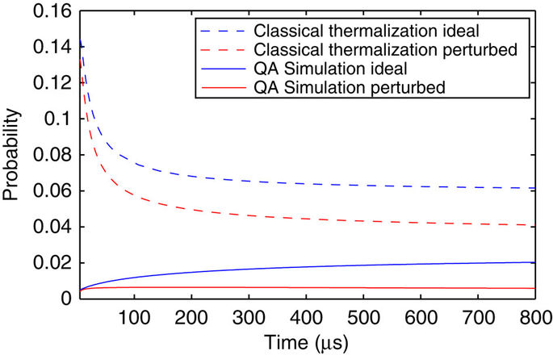

Quantum annealing é um processo usado pela empresa D-Wave, que tem como objetivo procurar soluções para resolver problemas.
Quantum annealing recorre às tendências naturais de sistemas quânticos
para encontrar estados de baixa energia.
Se a optimização de um problema for análoga à paisagem de montanhas e
vales e se cada coordenada representa uma solução possível e a sua elevação
representa a energia, a melhor solução é a que contém a menor energia, que é
correspondente ao ponto mais fundo do vale, naquela paisagem.
É então assim que Quantum annealing funciona.

CQ Topológico
Um CQ topológico é por agora, nada mais que um conceito teórico, visto que este
se baseia apenas em quasipartículas de duas dimensões conhecidas por Anyons.
A existência destas Anyons foi comprovada por um grupo de cientistas de
"Stony Brook University"no ano de 2005. Foi comprovado que estas não eram
simplesmente uma construção matemática.
Infelizmente esta experiência permanece sem ser aceite por completo pela
comunidade científica.
O modelo topológico utiliza as Anyons para formar tranças em três dimensões
no espaço-tempo, tranças estas que formam por sua vez as portas lógicas do
computador, tendo a vantagem de possuirem uma maior resistência ao ruído
externo.
Imagem explicativa do conceito de Anyons
CQ Adiabático
Este modelo de computação quântica é baseado num teorema chamado teorema
adiabático.
Teorema adiabático: Se um sistema quântico for alterado devagar o suficiente,
este irá ter tempo de se poder adaptar, ou seja, se o sistema se encontrava
inicialmente no seu estado próprio do Hamiltoniano inicial, irá também terminar
no seu estado próprio correspondente do Hamiltoniano final.
Sendo assim, num CQ de modelo adiabático, encontra-se um Hamiltoniano
complexo cujo estado fundamental irá descrever a solução do problema em
questão. Depois disso um Hamiltoniano simples é iniciado no seu estado fun-
damental, e através do método adiabático, o referido Hamiltoniano simples dá
lugar a um complexo, no qual o istema continua no estado fundamental, sendo
este último a resposta ao problema que lhe foi proposto.
Circuito Quântico
Este modelo, à semelhança de um CT dá uso a portas lógicas, só que este usa
portas lógicas quânticas em vez de regulares.
Exemplo de portas lógicas : AND, OR, NOT, NAND, etc...
No entado as portas lógicas quânticas têm obrigatoriamente que ser reversíveis,
ou seja, a informação que está na saída da porta, tem que conter uma
operação inversa que permita, por sua vez, obter uma entrada.
De seguida vamos mostrar dois exemplos de portas lógicas quânticas: